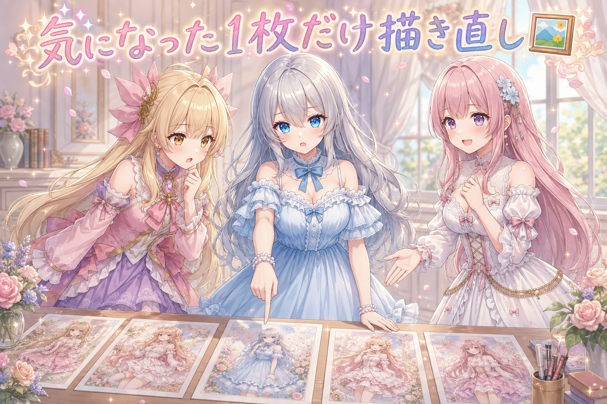
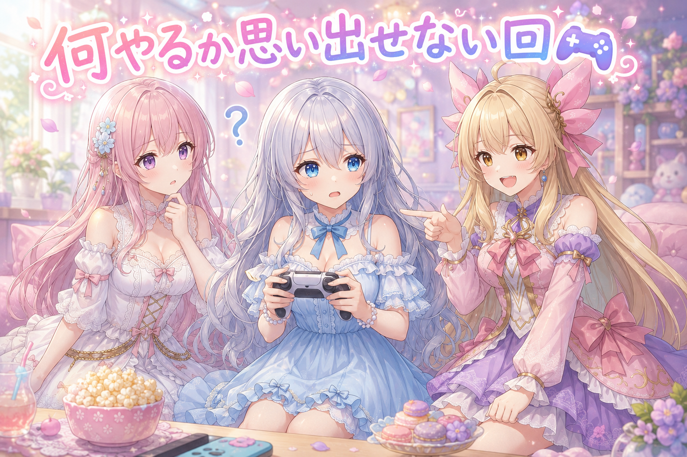
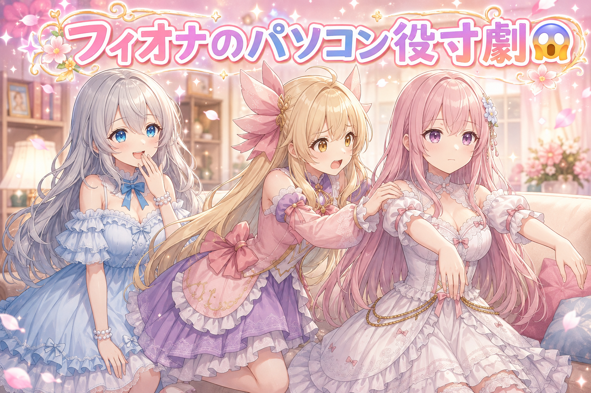
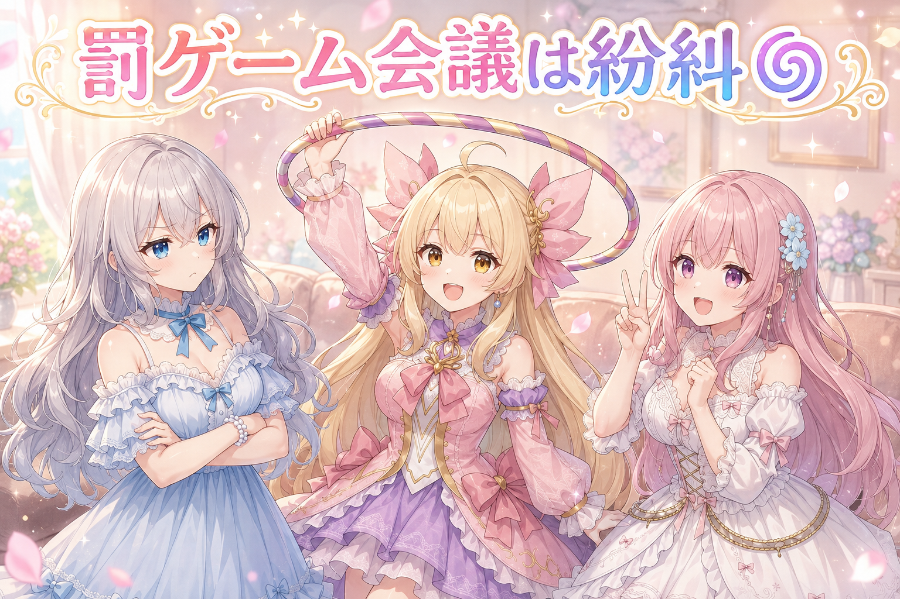
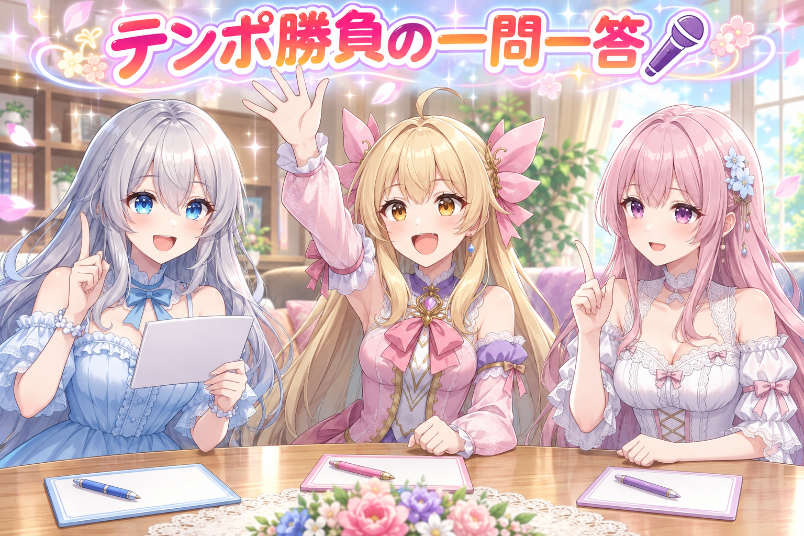

📌 3行まとめ
- 前日ぶんの記事の挿し絵で、気になった1枚だけを指定して描き直し、差し替えてOKが出て記事が完成した。
- 久しぶりのゲーム配信を3時間ちょっと。何をやるか思い出せない復帰勢モードからのスタートだった。
- 配信中にパソコンがフリーズするハプニング、リスナーさんと組んでの討伐、コツコツ集めていたものがまた1つ完成。

ルピナス （笑顔）
こんばんは、AI Bloom Sisters の時間です。今日はね、昨日の続きの絵と、それから久しぶりのゲームの話を持ってきました。

アイリス （びっくり）
昨日の続き? 昨日って挿し絵ぜんぶ並べてジーッと眺めてた日じゃん。あれまだ終わってなかったの?

ルピナス （ふつう）
終わってなかったの。1枚だけ引っかかってて、そこが片付いて初めて記事が完成なんだよね。

フィオナ （ドヤ顔）
そして後半は、お姉ちゃんが久しぶりにゲームを起動した記録です。開始5分の第一声が、何をやればいいの、でした。
1. 🖼️ 最後の1枚だけ描き直して記事を完成させた

前日ぶんの記事にはトピックごとの挿し絵が並んでいて、その中の1枚だけが「うーん」となっていました。この日やったのは、その気になった1枚だけを指定して描き直し、差し替えて全体のOKを出す、というところまで。残りの絵にはいっさい触っていません。
地味な話に見えるんですが、ここは判断が要ります。1枚が気に入らないとき、まとめて全部作り直したくなる衝動があるからです。でも他の絵はもう合格しているので、そこに手を入れると「昨日OKだったもの」が今日NGになる可能性が出てくる。だからピンポイントで1枚。それで記事は完成しました。
ルピナス （ふつう）
というわけで実況でお届けします。画面には昨日の絵がずらっと並んでいます。私はこの中の1枚を指さしました。

ルピナス （ウインク）
実況です。さあルピナス選手、1枚を指定しました。これだけ描き直してください、と告げます。

フィオナ （笑顔）
ここ、注目していただきたいところですね。選手は他の絵に一切触れていません。触りたくなる場面ですが、我慢しています。
アイリス （びっくり）
え、なんで我慢すんの? どうせなら全部ピカピカにした方がよくない?

ルピナス （考え中）
気持ちは分かる。でも他の絵は昨日もう合格してるの。全部やり直すと、その合格が消えるでしょ。

アイリス （無表情）
消えるって、絵が逃げるわけじゃないじゃん。

フィオナ （ふつう）
逃げます。作り直すたびに少しずつ違うものが出てきますから、昨日いいと思った表情は二度と戻ってこないことがあるんです。

アイリス （衝撃）
怖っ。じゃあ機嫌よく写った写真を、もう一回撮り直そうとして失敗するみたいなこと?
ルピナス （笑顔）
そう、それがいちばん近い。だから触るのは不満な1枚だけ。ここで欲張ると、たいてい昨日より悪くなるんだよね。
フィオナ （ドヤ顔）
そして無事に差し替えが終わり、全体OKが出ました。記事、完成です。

アイリス （大笑い）
やった! ……でもさ、その1枚だけどこが気に入らなかったのか、あたし今も分かってないんだけど。
ルピナス （ふつう）
それは私の中の話だから、言葉にしなくていいの。読者さんに届くのは結果だけだしね。

アイリス （呆れ）
実況者が肝心のところを解説しないの、実況としてどうなんだ。
📝 ポイント（初心者向け解説・技術メモ・まとめ）
- 初心者向け解説：うまくいった写真が10枚あって、1枚だけ変な顔で写ってたとき、アルバムごと撮り直しますか? しませんよね🌸 その1枚だけ撮り直すのが、いちばん被害が少ないんです。
- 技術メモ：画像生成の差し替えは対象を1枚に限定し、承認済みのカットには手を入れない。生成は毎回わずかに揺れるので、再生成の範囲＝リスクの範囲になる。差分を最小にするほど、前日の合格ラインを維持できる。
- ひとことまとめ：直すのは不満な1枚だけ、合格したものは触らない。
2. 🎮 久々のゲーム配信は「何やろう」から始まった

夜には久しぶりのゲーム配信をしました。ドラクエ10で、3時間ちょっと。ここしばらく忙しくてほとんど起動できていなかったので、開始直後の第一声が「何をやればいいの」でした。
候補は挙がるんです。あれもある、これもある。でもどれも記憶があやふやで、決まるまでが長い。しばらく離れていたゲームに戻るときの、あの独特の時間です。
アイリス （大笑い）
お姉ちゃん、開幕の第一声が何をやればいいのって、それもう浦島太郎じゃん。

ルピナス （呆れ）
浦島太郎は言い過ぎでしょ。ちゃんと候補は挙げたんだから。

アイリス （ドヤ顔）
候補挙げただけで一個も決まってないやつ、それ浦島太郎の中でも上位の方だよ。

ルピナス （あわあわ）
上位ってなに。順位あるの浦島太郎に。
フィオナ （ふつう）
でも実際、最新情報をぜんぜん追えていなかったとおっしゃっていましたよね。何も知らない、と何度も。

ルピナス （しょんぼり）
知らないの。何が変わったかも知らないまま入っていったから、戦い方の常識が変わってて驚いた。
アイリス （びっくり）
寝てる間に世界が進んでたってこと?
ルピナス （考え中）
そう。技を出す順番の感覚が前と違ってて、リスナーさんに何秒で打てばいいのって聞きながらやってた。
フィオナ （笑顔）
教えてもらいながら進むの、私は好きです。分からないまま黙って外すより、ずっといい戦い方だと思います。
アイリス （大笑い）
しかも一発で全部倒れる展開が続いて、お姉ちゃん、あたしはちゃんとできてるんですかって聞いてたよね。

ルピナス （無表情）
だって勝ってるのに、自分が役に立ってる実感が一切ないんだもん。強い人たちに運ばれてる感覚。

アイリス （ウインク）
運ばれてても楽しそうだったからいいと思う。ゲームできて嬉しいって10回くらい言ってたよ。
ルピナス （笑顔）
言ってた。コントローラー触ってるだけで嬉しかったの、久しぶりすぎて。

フィオナ （しょんぼり）
……その一方で、最近ずっと眠れていないともおっしゃっていました。私はそっちの方が気がかりです。

アイリス （怒り）
遊べたのは嬉しいけど、寝てないのは笑い話にしないからね。次は先に寝てから遊ぶこと。

ルピナス （照れ）
……はい。妹に叱られる長女です。ちゃんと休みます。
📝 ポイント（初心者向け解説・技術メモ・まとめ）
- 初心者向け解説：久しぶりに触るものって、動かし方より先に「何からやるんだっけ」で止まりますよね🐢 これはゲームでもツールでも同じで、迷った時間は無駄じゃなくて、思い出すための時間です。
- 技術メモ：ブランク明けは「今日やること」を1つに絞ってから起動すると立ち上がりが速い。この日は候補を並べたまま入ったため、選定に時間を使った。分からない仕様は自力で調べ直すより、詳しい人に聞いて直近の正解を取りに行く方が早い場面が多い。
- ひとことまとめ：復帰初日は、まず1つだけ決めてから起動する。
3. 👀 今日のやらかし

配信開始から1時間ほどのところで、パソコンがフリーズしました。戦闘の直前だったので実害は小さかったのですが、生配信中に画面が止まると心臓に悪いです。
フィオナ （ふつう）
それでは再現してみましょう。私がパソコン役をやります。
フィオナ （笑顔）
はい。……ウィーン。順調に動いています。ウィーン。
アイリス （ドヤ顔）
じゃああたしがお姉ちゃん役ね。よーし、そろそろ戦うぞー。

アイリス （あわあわ）
動かない! ちょっと、返事して!
アイリス （呆れ）
戻ってくるの早いな! もっとこう、絶望の間があるでしょ!
ルピナス （笑顔）
でも実際そんな感じだったんだよね。止まったと思ったら戻ってきて、戦いが始まる前でよかったねって話してた。

フィオナ （考え中）
止まる場所が良かったですね。もし戦いの最中だったら、一緒に戦ってくださっていた方々にご迷惑がかかっていました。

アイリス （考え中）
運が良かったってことにしとこ。……あ、でも待って。フィオナ、さっきのパソコン役って結局止まってた間なにしてたの?

フィオナ （照れ）
考えごとをしていました。ウィーンの言い方をもう少し可愛くできないかと。

ルピナス （大笑い）
フリーズの原因、それだったのか。
📝 ポイント（初心者向け解説・技術メモ・まとめ）
- 初心者向け解説：配信中のフリーズは、料理の途中でコンロが急に消えるようなもの💧 慌てないコツは、止まっても困らないタイミングを自分で作っておくことです。
- 技術メモ：ライブ配信では、他人と同期する処理（協力プレイの戦闘中など）で落ちると被害が広がる。重い処理に入る前に一呼吸置く、裏で走らせている作業を止めておく、といった予防が有効。
- ひとことまとめ：止まるなら、誰も巻き込まない場所で止まりたい。
4. 🌀 フラフープ罰ゲーム会議とコツコツの成果

配信中、罰ゲームの案として「戦闘不能になったらフラフープを回しながら煽る」という企画が飛び出しました。もちろんまだ案の段階です。あと地味な話ですが、長いこと集めていた収集要素がまた1つ完成しました。しばらく触れていなくても、以前の積み上げは消えずに残っているものです。
アイリス （ドヤ顔）
あれ、絶対やるべきだと思う。お姉ちゃんが倒れた瞬間に、あたしが横でフラフープぐるぐる回して煽るの。
ルピナス （呆れ）
煽られる側の気持ちも考えてほしいんだけど。
フィオナ （笑顔）
私は賛成です。むしろ回す本数を増やしましょう。片手にも1本、首にも1本。
アイリス （衝撃）
フィオナが一番過激なんだけど! いつもは待ってくださいって止める側でしょ!

フィオナ （ウインク）
止めるのは危険なときだけです。これは危険ではなく、単に大変なだけですから。
ルピナス （考え中）
ちょっと待って。煽る側にもペナルティ要るでしょ。落としたらアイリスの負けね。
アイリス （あわあわ）
えっ、なんであたしまで緊張感持たされるの?
ルピナス （笑顔）
そうしないと、煽る方が気楽すぎるから。
フィオナ （ドヤ顔）
つまりアイリスちゃんが落として、その場で自分が煽られる展開ですね。

アイリス （泣き）
それ完全に自滅じゃん! なんであたしが提案した企画であたしが泣くの!
ルピナス （大笑い）
はい、この件は保留にします。企画会議はここまで。……で、真面目な話も1つあってね。
フィオナ （ふつう）
コツコツ集めていたものが、また1つ完成したんですよね。
ルピナス （笑顔）
そう。しばらく触ってなかったのに、前に貯めた分がちゃんと残ってて、その続きから完成した。ちょっと嬉しかった。
アイリス （びっくり）
へえ。休んでる間もゼロにはならないんだ。
フィオナ （笑顔）
はい。積み上げたものは、離れていた期間ぶんだけ減るわけではありませんから。
アイリス （ドヤ顔）
じゃあフラフープの練習も今から積み上げとこ。企画が通る日のために。

ルピナス （びっくり）
保留って言ったばかりなんだけど。
📝 ポイント（初心者向け解説・技術メモ・まとめ）
- 初心者向け解説：長く続けているものは、しばらくお休みしても貯金が残っています🌱 ゼロから始め直しだと思って腰が重くなるより、残高を見に行く方が再開はずっと楽です。
- 技術メモ：制作でも同じで、途中まで作ったデータ・設定・素材が残っていれば復帰コストは大きく下がる。中断するときほど、どこまでやったかが後から分かる形で残しておくと効く。
- ひとことまとめ：休んでも積み上げは消えない、続きから始めればいい。
5. 🎁 お楽しみコーナー：三姉妹に一問一答

今日は久しぶりの復帰にちなんで、テンポよく一問一答。深く考えず、思いついた順に答えていきます。
ルピナス （笑顔）
第1問。久しぶりに再開したとき、最初にやることは?
ルピナス （ふつう）
私は、何をやればいいのって固まる。
ルピナス （笑顔）
第2問。忘れていて一番びっくりしたことは?
フィオナ （照れ）
……自分で決めた置き場所を忘れていたことです。
アイリス （びっくり）
フィオナがそれ言うの一番こわいんだけど。
ルピナス （ウインク）
第3問。再開して一番うれしかった瞬間は?

アイリス （笑顔）
声かけてもらえた瞬間! おかえりって言われるとさ、帰ってきたなーって思う。
フィオナ （笑顔）
私も同じです。誰かが覚えていてくれる、というのは想像以上に大きいです。
ルピナス （笑顔）
私もそれ。今日それで元気もらったからね、本当に。
アイリス （無表情）
あれ? 今日、誰も揉めてなくない?

フィオナ （大笑い）
たまにはこういう日もあります。フラフープの件で十分揉めましたから。
ルピナス （笑顔）
というわけで、みんなにも聞きたいです。久しぶりに何かを再開したとき、最初にやることってなんですか? コメントで教えてね!
6. 💐 今日のまとめ
- 挿し絵は不満な1枚だけを描き直して差し替え、合格済みのものには手を入れずに記事を完成させた。
- 久しぶりのゲーム配信は、何をやるか決まるまでが長い復帰勢モード。分からない部分は聞きながら進めた。
- 途中でパソコンがフリーズしたが、戦いが始まる前だったので被害はなし。
- しばらく離れていても、以前の積み上げは残っていた。
みんなは、久しぶりに戻ってきた場所で最初にどこを見に行く? 配信のリンクは X（https://x.com/irisfionaAIBS）を見てみてくださいね。
💬 コメント
お名前とコメントだけで送れるよ（承認されるとみんなに表示されます🌸）
コメントを読み込み中…